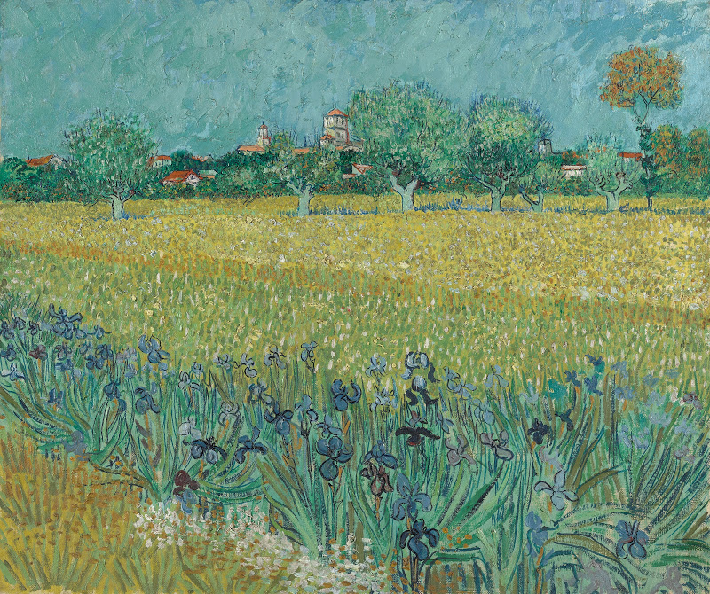

Mình Là Ai & Sống Để Làm Gì
Cùng bắt đầu mọi thứ với mấy câu chuyện.
Chuyện thứ nhất, về một chàng trai sinh năm 1968 ở Mỹ, người mà tầm chúng ta phải gọi bằng chú hay bác, tốt nghiệp Đại Học vào năm 1990, với hai bằng loại ưu. Nhưng bất ngờ, anh ta bỏ mọi thứ, bỏ gia đình sung túc, ủng hộ từ thiện gần hết số tiền tiết kiệm và đốt sạch những đồng tiền giấy còn lại, đi bụi khắp nước Mỹ suốt mấy năm, trải qua cuộc sống với người dân ở nhiều nơi. Sau rất nhiều chuyến phiêu lưu và cuối cùng chọn thử thách sinh tồn tại vùng đất khắc nghiệt Alaska, giữa mùa đông. Anh ấy chính là Christopher McCandless, người nổi tiếng với cái tên Alexander Supertramp, được các phượt thủ Việt Nam tôn làm Thánh Phượt (đùa đấy :D). Có nhiều ý kiến trái chiều về lý do Alex hành động. Tuy nhiên, với góc nhìn cá nhân, có phần trải qua những biến cố tương tự, mình nghĩ lý do Alex ra đi vì “mâu thuẫn giá trị” và “thấy cuộc sống không có ý nghĩa”. Mâu thuẫn giá trị, khi anh thấy giá trị sống của bản thân và của xã hội (cũng như gia đình, trường học) bị xung đột. Cuộc sống vô nghĩa, anh thấy mười mấy năm trời cắm đầu vào học để tốt nghiệp, rút cuộc là để làm cái gì, vì ai. Cộng thêm tính cách hướng nội, có phần tiêu cực, kỳ vọng - áp đặt của gia đình, cùng với cú shock về cuộc ly hôn của bố mẹ, khiến anh quyết định ra đi. Tìm ý nghĩa cuộc sống cho mình, và chọn ra cách sống (hay giá trị sống) cho bản thân. Chính vì vậy, anh đi khắp nơi và cuối cùng tiến vào hoang dã, để sống cuộc sống xa rời những giá trị vật chất, thử thách bản thân và tìm ra chính mình. Rất tiếc là cuối cùng anh không thể vượt qua khắc nghiệt và chết vì đói trong một chiếc xe bus bỏ hoang. Chuyện đã được chuyển thể thành truyện, phim với nhạc cực hay: https://goo.gl/RGzW6F. Đây cũng là câu chuyện truyền cảm hứng cho mình thực hiện nhiều chuyến đi.
Chuyện thứ hai, kể về một cặp đôi, gặp nhau trong một show nhạc Rock, hai kẻ đơn độc tình cờ đứng cạnh nhau giữa một rừng người, để rồi sét đánh tình yêu, rồi sau đó bắt đầu yêu cuồng say, cuồng say đúng nghĩa những rockfan. Nhưng rồi sau thời gian say đắm ấy, họ bắt đầu nảy sinh mâu thuẫn, bắt đầu tình cảm rạn vỡ, rồi cuối cùng chia tay vì lý do rất phổ biến: Không hợp nhau. Cô gái ấy, sau chuyện tình đổ vỡ thì quyết tâm đi tìm bằng được chàng trai của đời mình, rồi cô có vài mối tình nữa, mới đầu ngỡ đâu là định mệnh, nhưng sau cùng cũng “đơn giản là chẳng hợp nhau”. Chàng trai thì quyết tâm xây dựng sự nghiệp, phớt lờ tình yêu ong bướm, chàng ra trường với cái bằng kỹ sư tin học loại giỏi, thứ mà chàng, bạn bè, gia đình chàng từng mơ ước. Đi làm lương cao nhưng thấy gò bó và ù lì, liền quyết tâm theo nghề sales, nghề mà được nói nhiều, năng động, giao tiếp nhậu nhẹt triền miên. Rồi cuối cùng cậu thấy mình chẳng quảng giao lắm, lại không bia rượu được, nên sau xin về làm nhân sự, đến giờ thấy nhân sự suốt ngày lương bổng, tuyển dụng cũng chán. Giờ chàng chẳng biết làm gì tiếp theo. Mà mình đồ rằng, cứ mãi như vậy, tới 40 tuổi chắc gì cậu đã tìm được nghề phù hợp cho mình. Còn cô gái riết rồi chắc yêu đại một người, nghĩ đầy người chẳng hợp vẫn ở với nhau béo mầm ấy thôi, rồi suốt mấy chục năm mâu thuẫn hỏi “có hợp hay không”. Cái gọi là khủng hoảng tuổi 40, lúc mà chẳng thể đổi nghề, đổi vợ chồng được nữa, đành lao theo làm tới – sống đến lúc chết - là xong.
Chuyện thứ ba, một câu chuyện của mình: Một lần đi phỏng vấn
xin việc trong một tập đoàn công nghệ, sau khi hỏi mọi câu hỏi
cần thiết, anh phỏng vấn đưa cho mình một tờ giấy A4, trên đó in đầy những đức
tính của con người: từ chăm chỉ, chịu khó, tiết kiệm, hiền lành, cầu toàn, làm
việc chi tiết đến nhanh nhẹn, năng động, quảng giao, phóng khoáng… Tổng cộng ước
cũng đến 40-50 đức tính, mình tự tin khoanh từng thứ mình thấy đúng với bản
thân. Nhưng càng khoanh mình càng tá hỏa: Thế quái nào, cái gì mình cũng thấy
mình có là sao. Nếu mà khoanh hết, thì có phải là tự phụ quá không, cuối cùng
mình chọn một số đức tính mà mình nghĩ là nhà tuyển dụng cần. Tuy nhiên, tới giờ
nghĩ lại thấy buồn cười, mình khoanh cả những cặp đức tính mà khó thể nào song
hành với nhau, và đều là điểm mạnh. May mà đến vòng cuối cùng phỏng vấn gặp CEO
thì mình bị loại, bởi giờ nghĩ lại mình không biết nếu mình đỗ, thì mình làm được
bao lâu.
Chuyện cuối cùng, từ một cô bé, cô ấy mới nói với mình là: “em đọc nhiều sách quá, nó cứ xúi là “hãy là chính mình”, nên em gặp một số vấn đề trong cách làm việc với con người”. Thiết nghĩ, đúng là ai có cá tính cũng có suy nghĩ: Mình cứ là chính mình. Nhưng vấn đề là, là chính mình là thế nào, có cả mấy tỷ người mấy tỷ loại tính cách, mình là ai trong cái thế giới này để mà là chính mình. Nên câu chuyện ở đây là, trước khi muốn là chính mình, phải hiểu mình là ai, hay muốn là ai trước hết. Nếu chưa biết mình là ai, thì “cái tôi” sẽ lên ngôi. Nguy hiểm.
Mấy chuyện ấy, thực ra có chuyện thứ hai là chuyện hư cấu, nhưng dựa trên những chuyện có thật từ rất nhiều người quanh mình, những chuyện hết sức thường gặp ở Việt Nam. Vậy, rút cuộc thì ở Mỹ ở Việt Nam hay ở đâu trên trái đất thì cũng đều gặp những vấn đề như nhau. Người ta đa số chẳng cần hiểu rõ bản thân, chẳng cần tìm cho mình một hệ giá trị sống, chẳng cần biết mục đích sâu xa của cuộc sống là gì, có khi tới chết vẫn không biết, hoặc chẳng cần biết. Bởi vì cả tỷ người khác, đâu cần có những điều ấy, họ vẫn đâu có chết.
Nhưng tại sao cần phải đi tìm những câu trả lời ấy. Câu trả lời của mình là: Để được sống đúng với chính mình.
1. HIỂU BIẾT VỀ BẢN THÂN
Chúng ta thử hình dung, nếu không hiểu về bản thân, sẽ gặp nhiều khó khăn khi lựa chọn, những lựa chọn lớn trong đời: chọn nghề, chọn nghành, chọn người yêu-vợ-chồng…bởi vì, không rõ bản thân mình phù hợp với cái gì, muốn điều gì, thì sao biết mà lựa chọn cho đúng.
Vậy, hiểu về bản thân là hiểu về những cái gì? Theo mình, là phải trả lời được: Mình xuất phát từ đâu tới, được giáo dục ra sao? Tính cách của mình là gì? Điểm mạnh-điểm yếu của bản thân là gì? Mình thích-đam mê cái gì?Tất cả những câu hỏi ấy, đều không dễ trả lời, và không thể trong ngày một ngày hai, nó có thể là cả một quá trình hoặc có khi chỉ trong chốc lát, khi mình đã trải nghiệm đủ sâu. Trên thế giới có rất nhiều người như Alex ở trên, đi lang thang khắp nơi, thử thách bản thân, đối đầu với nguy hiểm, để hiểu chính mình hơn. Và có vô số cách để hiểu chính mình, đôi khi chỉ cần sống nhẹ nhàng với hiện tại, chú ý từng góc nhỏ của cuộc sống, của bản thân, cũng hiểu được chính mình.
2. MỘT HỆ GIÁ TRỊ SỐNG (QUAN ĐIỂM SỐNG – TRIẾT LÝ SỐNG)
Nếu không có một hệ giá trị rõ ràng, chúng ta sẽ mâu thuẫn khi đặt câu hỏi đúng sai, mâu thuẫn giữa những hành động của chính bản thân mình, là làm như vậy nên hay không nên, có đúng với lương tâm hay không. Nhưng lương tâm là thế nào?
Mình gọi thời đại này ở Việt Nam là thời đại khủng hoảng giá trị, khi mà từ ngày bé tới lớn, mình được học và được gia đình dạy một hệ giá trị đạo đức chuẩn mực, rồi khi ra xã hội, rất nhiều giá trị mới du nhập, nó thay đổi và xung đột với hệ giá trị đạo đức cũ. Tới khi đi làm, khi có gia đình, khi thế giới hội nhập, rất nhiều những giá trị mới, mà gần như trái ngược với những giá trị cũ. Nó làm mình bị rối, bị mâu thuẫn, bị lung lay và không biết thế nào là đúng, phải làm sao. Thế hệ 8x, 9x là thế hệ giao thoa giữa hai thời kỳ, tạm gọi là thời kỳ đổi mới (thời kỳ sau chiến tranh, sau bao cấp…) và thời kỳ hội nhập (thời kỳ kinh tế thị trường, công nghệ, toàn cầu hóa…). Khi mà những giá trị cũ được thay bằng giá trị mới. Trong khi chúng ta được đào tạo bằng giá trị cũ, thì lại phải sống giữa giá trị mới. Chưa kể giá trị từ văn hóa Âu Mỹ Hàn Nhật đang dồn dập tới, chuyện mâu thuẫn và khủng hoảng là điều tất nhiên. Đấy chính là lý do, cần lựa chọn cho mình một hệ giá trị rõ ràng, và theo đuổi, để không bị mâu thuẫn và lung lay.
Hệ giá trị cũng có thể coi là hệ thống quan điểm, cái mà theo mình, nếu không tự vạch rõ ra, mang tính chất cụ thể cho từng cá nhân, thì hệ thống quan điểm của một người, sẽ bị số đông áp đặt, sẽ đi theo quan điểm của xã hội. Đấy là cách mà rất nhiều người lựa chọn (hoặc vô tình lựa chọn), rằng: không cần quan điểm sống, vì xã hội đã tự định hình cho rồi. Cứ bình tĩnh. Như vậy thật nguy hiểm, cuộc đời mình mà mình lại đi sống bằng quan điểm của người khác thì thật quá chán.
Một ví dụ sát nhất về chuyện này, hiện nay, là chuyện “sự trinh tiết” và “sex trước hôn nhân”. Hai thứ ấy, thứ mà - con gái thì mâu thuẫn về việc “giữ”, con trai thì mâu thuẫn về việc ”chấp nhận”. Những thứ mà từ bé tới lớn ai cũng nghĩ khác, bây giờ nghĩ hoàn toàn khác. Chẳng có đúng sai và tranh luận là không có hồi kết. Vậy hệ giá trị cần có là gì, để có lựa chọn đúng? Đấy chính là lý do vì sao cần có “hệ giá trị”.
3. MỤC ĐÍCH SỐNG
Vậy còn mục đích sống, rất nhiều bạn mình, khi được hỏi là: Sống để làm gì? Mục đích sống là gì? Thì những câu trả lời thường là: “Sống để tận hưởng cuộc sống, để theo đuổi đam mê, để hạnh phúc” hay “Cần gì mục đích sống gì to tát, cứ đi làm có tiền, chơi những thứ mình thích, yêu người mình yêu, cuộc sống đơn giản ngày qua ngày” có người thì: “chỉ cần vườn rau ao cá là hạnh phúc rồi, đơn giản vậy thôi”.
Chung quy thì chúng ta đều đi tìm kiếm hạnh phúc, hạnh phúc theo định nghĩa của riêng mình. Điều ấy hoàn toàn hợp lý. Nhưng có điều, hạnh phúc là gì, nó biểu hiện ra sao, làm thế nào để có được, cân đong đo đếm thế nào. Nó là câu hỏi riêng cho mỗi người. Cái mà mỗi người cần phải tự đi tìm câu trả lời cho mình, một cách hết sức cụ thể. Mình nhớ hồi mình coi trên TED, có một câu mình rất tâm đắc: “Cái gì không đo lường (đo đếm) được, tức là không tồn tại”.
Vậy “mục đích sống” – “hạnh phúc” của mỗi người là gì, không thể nói chung chung được, phải cụ thể hóa, càng đơn giản ngắn gọn, đo đếm được, xác định được càng tốt. Mục đích sống có thể to lớn, hay giản đơn, nhưng không thể không có. Nếu không có, thực chất chúng ta chỉ đang tồn tại, sống cho tới khi chết - qua ngày. Chứ có thực sự “sống đúng nghĩa” hay không?
Vậy túm lại, ba thứ quan trọng mà bất kể một người nào muốn “sống với chính mình” cần phải tìm hiểu thật kỹ: 1. Hiểu về chính mình 2. Hệ giá trị 3. Mục đích sống. Thực ra, từ đông tây kim cổ, từ xưa đến nay, có rất nhiều sách vở, nhiều bàn luận nói về mấy vấn đề này, nhưng mỗi người có một câu chuyện riêng, cách làm riêng, hoàn cảnh khác nhau. Nên quan trọng là có dám tìm hiểu và dám có góc nhìn riêng hay không mà thôi.
Tuy nhiên, mình tin chắc rằng, ai cũng cần có câu trả lời cụ thể cho mình, kể cả là bạn chẳng có mục tiêu gì cao xa, chỉ muốn sống cuộc sống bình thường. Bởi có một câu mình tâm đắc: “Bất hạnh tự nhiên nó đến, hạnh phúc thì phải mưu cầu mới có”, tức là nếu mình cứ nghĩ chỉ cần hài lòng với những thứ mình có, thì bất hạnh sẽ ập đến. Lúc ấy lấy thứ gì để hạnh phúc?
Tất cả mọi thứ đều có công thức, thật vậy, đến cách sống mà cũng có công thức, có mô hình để áp dụng. Nhưng như trên, mình nghĩ công thức không quan trọng bằng cách làm và có dám làm tới cùng hay không. Dám đặt câu hỏi - tức là sẽ (đã) có câu trả lời.
Một vài từ khóa để ai đó muốn đi tìm lời giải, tìm công thức:
- Công thức của mình: Hiểu
về bản thân – Lựa chọn hệ giá trị - Xác định mục đích sống – Sống với những gì
mình đã chọn. Trong đó, mỗi thứ lại có nhiều nhánh nhỏ hơn, cái mà cần xác định
và phải rất rõ ràng – cụ thể.
- Ikigai (Nhật Bản): https://en.wikipedia.org/wiki/Ikigai
- Quản trị cuộc đời (Giản
Tư Trung): https://www.youtube.com/watch?v=qK-Sagu9WtE
- Đúng Việc (Giản Tư
Trung): http://dungviec.org
- Rồi lý thuyết về mấy vòng tròn, MBTI, chiêm tinh… đủ cả, và nhiều vô
kể nếu tìm hiểu kỹ.
Cá nhân mình, mình sẽ hỗ trợ mọi người bằng cách (ở những post sau), chỉ ra cách mình trả lời các câu hỏi, và nói về các mặt tốt xấu của những câu trả lời (những lựa chọn). Đâu đó hi vọng sẽ giúp được ai đang đi tìm câu trả lời.